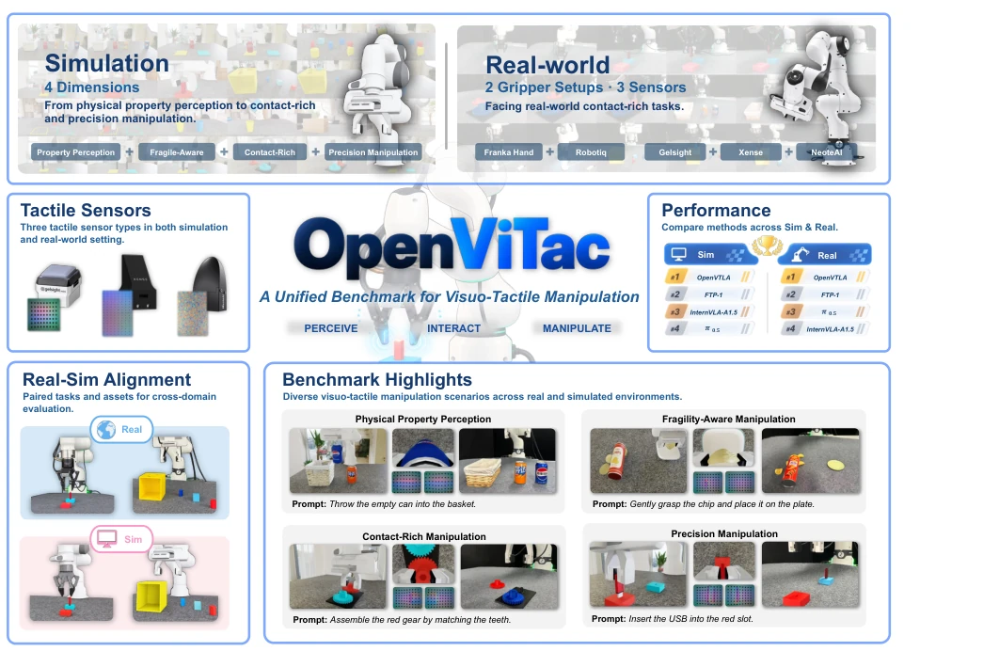
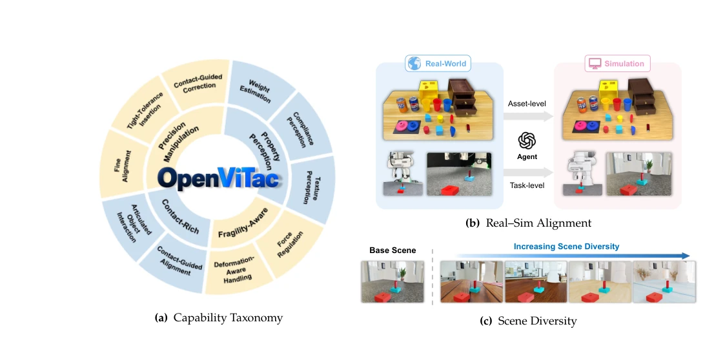
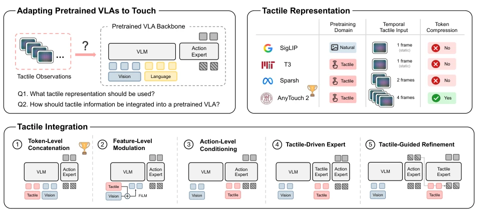
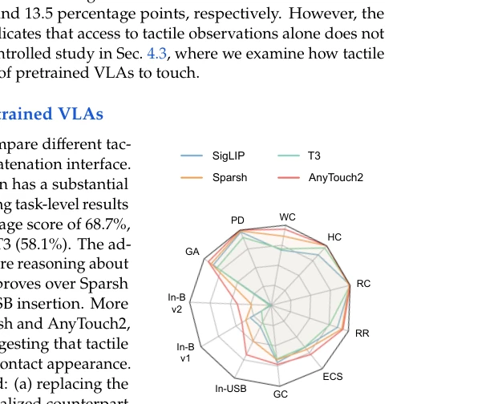

OpenViTac attempts to bring a "Grand Unification" to the chaotic field of tactile robotics. This idea is compelling, but in execution, it still cannot escape the curse of "simulation is hell". The highlight lies in that it not only aggregates tactile tasks across four dimensions but also enforces alignment between simulation and real-world assets, attempting to solve the stubborn issue of "works in simulation but fails on real hardware". The proposed OpenVTLA framework straightforwardly employs AnyTouch2 combined with Token concatenation; the effect is indeed better than those elaborate fusion modules, illustrating that sometimes "less is more". However, there are also significant drawbacks: tactile rendering remains a black box, the gap from simulation to reality has narrowed but not vanished, especially Precision Manipulation on real hardware remains abysmal. Additionally, it overstates the importance of tactile pre-training, ignoring that data volume itself is paramount. Overall, this is a useful benchmark, but do not expect it to directly solve the physical essence challenges of tactile perception.
Existing vision-dominated robot strategies (such as VLA) often fail in physical interactions lacking visual information, whereas tactile feedback can supplement key information such as contact geometry and force feedback. However, current tactile robotics research faces three major challenges: first, the lack of a unified benchmark, where existing work evaluation standards vary, making cross-comparison difficult [20, 5]; second, existing tactile benchmarks (such as Tabero [37], UniVTAC [3]) are severely insufficient in tactile capability coverage, hardware configuration diversity, and simulation-to-reality correspondence, failing to systematically evaluate the contribution of tactile feedback to policies; third, tactile representation and fusion strategies lack consensus, with different studies employing different sensors, task settings, and fusion methods, leading to fragmented understanding. OpenViTac aims to fill this gap by providing paired simulation-real-world environments and multi-dimensional capability evaluations, systematically addressing tactile strategy evaluation and alignment issues.

Figure 1 Overview of OpenViTac. OpenViTac establishes a unified benchmark for visuo-tactile manipulation, spanning four complementary capability dimensions: physical-property perception, fragility-aware interaction, contact-rich manipulation, and precision manipulation. It provides task-corresponding simulation and real-world settings with aligned assets, supports multiple gripper configurations and tactile sensors, and enables consistent evaluation of visuo-tactile policies across both domains.
OpenViTac establishes a unified "simulation-real-world" evaluation framework, comprising three core modules. First is benchmark design, categorizing tactile manipulation capabilities into four dimensions: Property Perception, Fragility-Aware, Contact-Rich, and Precision Manipulation, and constructing paired sets of 11 simulation tasks and 8 real-world tasks, ensuring consistency between simulation and real-world through asset-level reconstruction (multi-view reconstruction) and task-level alignment (initial state, target configuration). Second is the OpenVTLA framework, designed to adapt pre-trained VLA models to tactile input. The framework optimizes along two dimensions: regarding tactile representation, it compares SigLIP, T3, Sparsh, and AnyTouch2, ultimately selecting AnyTouch2 to leverage its temporal dynamic information; regarding tactile fusion, it compares five strategies: Token-level concatenation, feature modulation, action-level conditioning, tactile expert, and tactile-guided fine-tuning, ultimately determining that directly concatenating tactile Tokens encoded by AnyTouch2 to the VLM input sequence (Token-Level Concatenation) is the most effective. Finally is simulation-real-world joint training (Co-training), introducing simulation data from diverse scenarios for mixed training under a fixed real-world data budget, utilizing behavior cloning loss functions for joint optimization to enhance the policy's generalization capability in real-world environments.

Figure 2 Overview of the OpenViTac design. (a) Capability taxonomy with four visuo-tactile capabilities and their underlying skills. (b) Construction of task-corresponding simulation environments from real-world references at the asset- and task-levels. (c) Support for scene diversification through configurable appearance variations in simulation.

Figure 3 Design space for adapting pretrained VLAs to touch. We investigate two complementary dimensions: tactile representation and tactile integration.
Experiments were conducted on the OpenViTac benchmark, evaluating 6 VLA, 3 WAM, and 1 VTLA baselines along with OpenVTLA. In the simulation environment, OpenVTLA achieved an average success rate of 68.7%, significantly outperforming the strongest VLA baseline (51.5%) and existing VTLA (61.2%). In the real-world environment, OpenVTLA led with a 54.6% success rate, validating the significant improvement of tactile feedback on Physical Property Perception (PP) and Fragility-Aware (FA). Ablation studies indicate that temporal-aware tactile representation (AnyTouch2) outperforms static representation, and the Token-level concatenation strategy surpasses complex feature modulation or expert modules. Joint training experiments demonstrate that introducing 500 simulation data samples can improve real-world success rates by 20 percentage points, exhibiting stronger robustness under illumination perturbations. However, Precision Manipulation (PR) tasks still perform poorly on real-world hardware, revealing the remaining gap between tactile simulation and real physical interaction.

Figure 4 Performance of different tac- tile representations under the same token-level concatenation strategy.